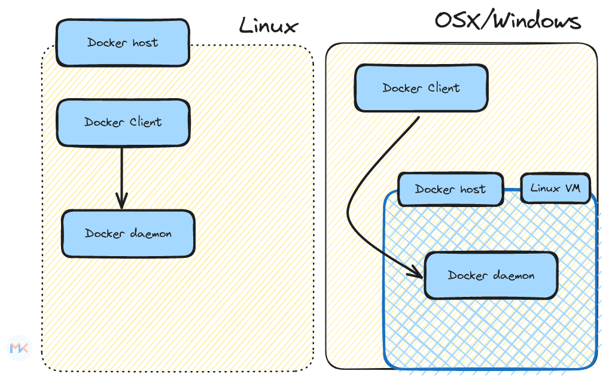

class: center, middle <!--  --> .center[ <img src="../assets/images/01-primary-blue-docker-logo.png" width=50% class="animate__animated animate__fadeIn"/> ] <h1 class="animate__animated animate__fadeIn"> Complete Docker Hands-on</h1> .right[ <img src="../assets/images/mk-logo.png" width=10% /> ] By - Mohit Kumar [mohitkr.com](https://mohitkr.com) --- # What is Docker? .right-column[ <img src="../assets/images/01-primary-blue-docker-logo.png" width=80% class="animate__animated animate__fadeIn"/> ] .left-column[ As per wikipedia > Docker is an open-source project that automates the deployment of software applications inside containers by providing an additional layer of abstraction and automation of OS-level virtualization on Linux.It accomplishes this by using an operating system technology called containers. ] --- ## What is Docker? As per Docker documentation - Docker is an open platform for developing, shipping, and running applications. - Docker is written in the Go programming language and takes advantage of several features of the Linux kernel to deliver its functionality. - Docker uses a technology called namespaces to provide the isolated workspace called the container. When you run a container, Docker creates a set of namespaces for that container. --- ## So what actually is Docker? -- - **Docker Engine** - Docker Engine is the core technology that powers Docker containers. It's a low-level, command-line interface (CLI) tool that allows you to build, run, manage, and share containers. - Docker Engine interacts directly with your operating system's kernel to manage container resources like CPU, memory, and storage. It runs as a background daemon process and is accessible through Docker CLI commands. -- - **Docker Desktop** - Docker Desktop is a platform built around Docker Engine that provides a user-friendly graphical interface (GUI) for managing containers. It's aimed at developers and individuals who want to easily work with Docker without requiring deep technical knowledge. - Docker Desktop installs and runs Docker Engine in a lightweight virtual machine (VM) on your system. This VM manages the container environment and provides the GUI for interacting with it. --- ## Docker engine vs Docker Desktop .center[  ] --- ## Docker Desktop # DevOps Matrix of Hell .center[ <img src="../assets/images/matrix-of-hell.png" width=60% class="animate__animated animate__fadeIn"/> ] --- # Matrix of hell To understand the matrix of hell, let us understand the following example, where we have two applications - `max-hell-python-2.py` & - `max-hell-python-3.py`, which are dependent on `Python 2.7` and `Python ~ 3.0` respectively. --- # Matrix of hell .center[ <img src="../assets/images/dedicated-wiring-guy.jpg" width=60% class="animate__animated animate__fadeIn"/> ] --- # Why not a virtual machine --- ## Key Concepts - **Containers:** Lightweight, standalone, and executable packages that include everything needed to run a piece of software. - **Images:** Templates for containers, providing a snapshot of a file system, application code, and runtime. - **Docker Hub:** Centralized repository for sharing and distributing Docker images. --- ## How Docker Works ```dockerfile # Dockerfile example FROM ubuntu:latest RUN apt-get update && apt-get install -y nginx CMD ["nginx", "-g", "daemon off;"] ```